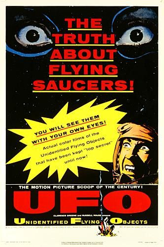

Affiche de U.F.O: The Truth about Flying Saucers! le 3

Sortie de U.F.O.: The Truth about Flying Saucers!.
Couverture de Fate ce mois-là
Palm Desert observation d'un phénomène rond, de la taille
d'un pois tenu à bout de bras semblant voler à l'ouest. Le projet Blue Book concluera au vol d'un appareil
conventionnel
"Project 10073 Card", Black Vault
.